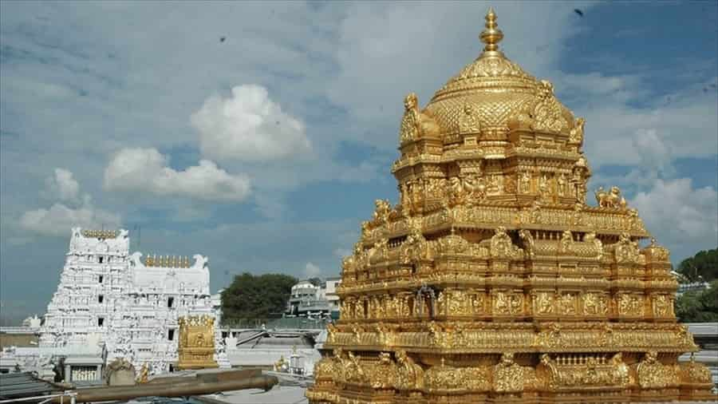
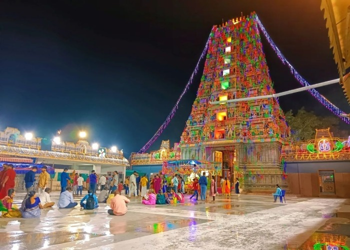
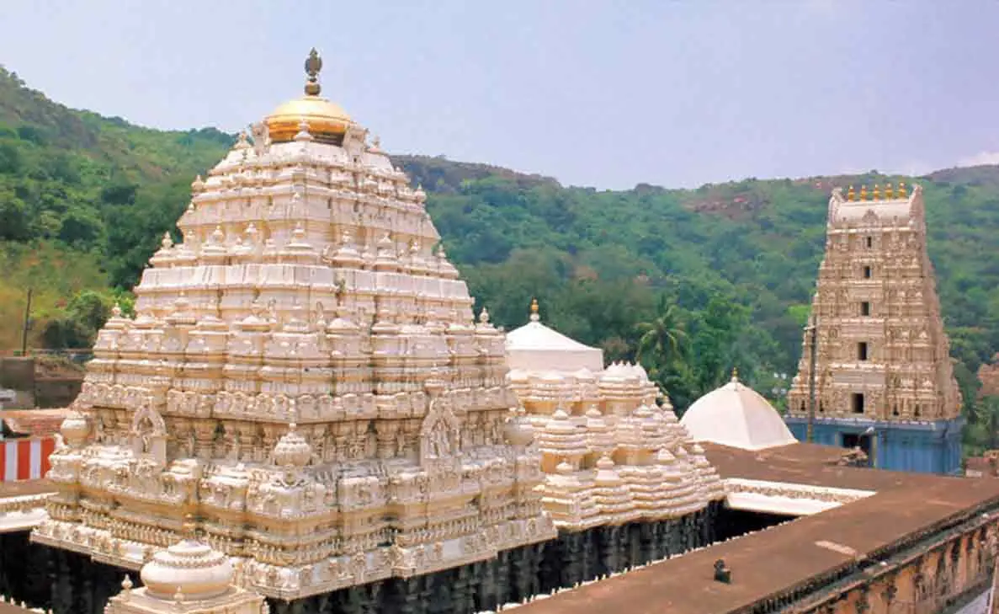
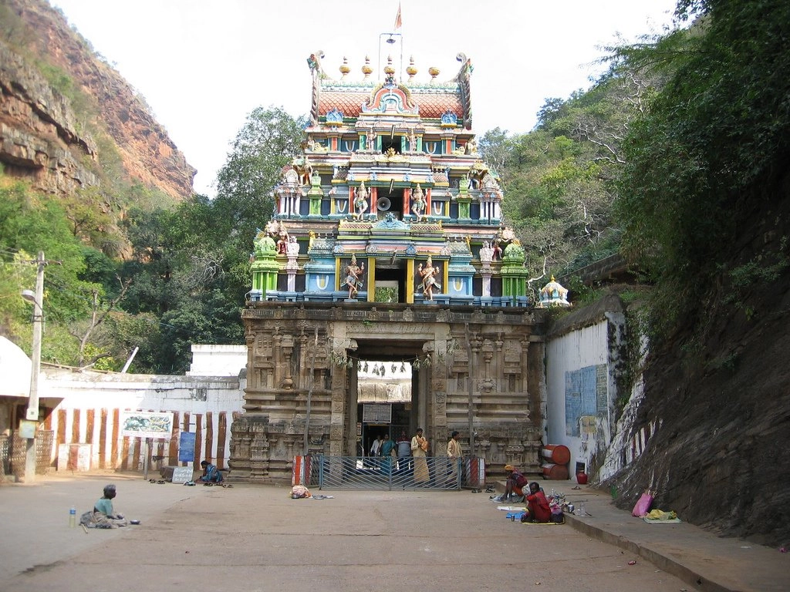

Temples and piligrimages in Andhra Pradesh
Tirumala Venkateswara Temple, Tirupati

The Tirumala Venkateswara Temple, located in Tirupati, Andhra Pradesh, is one of the richest and most visited pilgrimage sites in the world. Dedicated to Lord Venkateswara (a form of Vishnu), it attracts millions of devotees every year.
- Key Aspects of Tirupati Temple:
- Religious Significance: One of the holiest temples in Hinduism.
- Devotees: Millions visit every year from across the world.
- Famous Offering: Laddu prasadam.
- Location: Tirumala Hills, Tirupati, Andhra Pradesh.
- Click here for more information.
Srisailam Mallikarjuna Temple
Srisailam Temple is one of the 12 Jyotirlingas of Lord Shiva and also a Shakti Peeth. It is located on the banks of the Krishna River and surrounded by the Nallamala Hills.
- Key Details:
- Religious Importance: Jyotirlinga and Shakti Peeth.
- Best Time: October to March.
- Location: Srisailam, Andhra Pradesh.
- Nearby: Srisailam Dam.
- Click here for details.
Kanaka Durga Temple, Vijayawada

Kanaka Durga Temple is a famous Hindu temple dedicated to Goddess Durga, located on Indrakeeladri Hill in Vijayawada. It is especially crowded during the Dasara festival.
- Key Information:
- Significance: Dedicated to Goddess Durga.
- Festival: Dasara/Navratri celebrations.
- Location: Vijayawada, Andhra Pradesh.
- Accessibility: Easily reachable by road and rail.
- Click here for more information.
Simhachalam Temple, Visakhapatnam

Simhachalam Temple is dedicated to Lord Narasimha (an incarnation of Vishnu). It is known for its unique idol covered with sandalwood paste throughout the year.
- Key Aspects:
- Religious Importance: Dedicated to Lord Narasimha.
- Unique Feature: Idol covered with sandalwood paste.
- Festival: Chandanotsavam.
- Location: Visakhapatnam, Andhra Pradesh.
Ahobilam Temple

Ahobilam is a sacred pilgrimage site dedicated to Lord Narasimha, located in the Nallamala Hills. It consists of nine temples known as Nava Narasimha temples.
- Key Details:
- Religious Significance: Associated with Lord Narasimha.
- Special Feature: Nine temples (Nava Narasimha).
- Location: Kurnool district, Andhra Pradesh.
- Best Time: October to March.